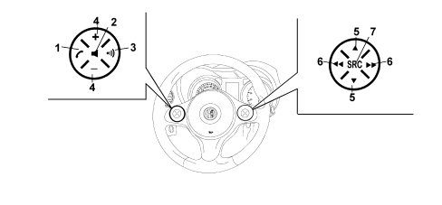
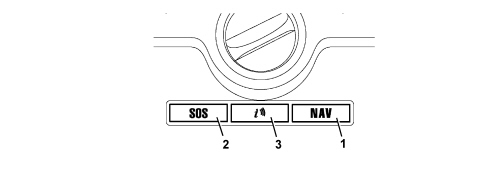
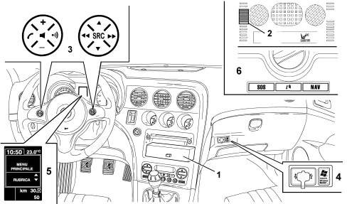
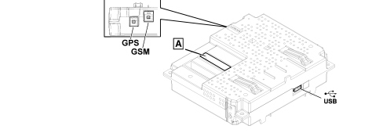
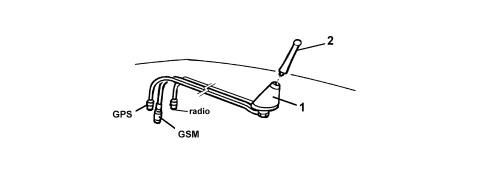

“BLUE&ME Nav”
BLUE&ME based on Windows Mobile is a personal infotainment system which allows the use of applications for communication and entertainment, specially designed for use in vehicles.
The BLUE&ME system is available in two versions:
- standard version, with hands-free function for Bluetooth mobile phones with voice commands, SMS voice player and media player with USB port
- de-luxe BLUE&ME Nav version which, in addition to the previous functions, includes a satellite navigation system which uses the USB device with pre-loaded maps and shows the navigation information on the panel reconfigurable multifunction display.
The de-luxe BLUE&ME Nav system is described in this section.
The basic version is described in:
See descriptions 5570 ACCESSORIES

The control unit manages the entire system and is a CAN node through which information is exchanged with the Body Computer and with the other electronic units.
The entire operation of the system is also managed by voice commands, picked up by the microphone near the front courtesy light.
The alphanumerical display used for text messages is the one for the control panel.
See descriptions 5560 INSTRUMENTS
The control unit is then connected to the controls on the steering wheel (in addition to the radio control buttons, there are 2 specific buttons for this function).
List of steering wheel control functions:

|
Button |
Short press (less than 1 second) |
Long press (longer than 1 second) |
|
1 |
- Activation of Blue&Me Nave Main Menu - Confirmation of menu option selected - Accept incoming phone call - Change from one telephone conversation to another in second call mode (call notification) - Selection of message displayed |
- Refuse incoming phone call - Ending of phone call in progress |
|
2 |
- Deactivation of voice recognition - Interruption of voice message - Interruption of SMS message reading - Exit from Blue&Me Nave Main Menu - Exit from a sub menu and return to the previous menu option - Exit from the current selection with storing - Deactivation/reactivation of the microphone during a phone conversation - Resetting the volume of the call tone for the incoming phone call - Activation/Deactivation of multimedia player pause function |
|
|
3 |
- Activation of the voice recognition - Interruption of the voice message in order to give a new voice command |
Repetition of the last voice message given by the system |
|
4 |
- Adjustment of audio volume for Blue&Me Nav functions: hands-free, SMS reader, multimedia player, voice announcements |
|
|
5 |
- Scrolling through Blue&Me Nave menu items - Direct access to multimedia player menu during display of information relating to audio track being played - Scrolling through SMS messages in the list – Specific navigation functions |
|
|
6 |
- Selection of multimedia player tracks |
|
|
7 |
- Confirmation of menu option selected during manual interaction - Transfer of the telephone conversation in progress from the hands-free system to the mobile phone and vice versa - Audio source selection (Radio, CD, CD Changer, Multimedia Player) - Selection of SMS message displayed |
For many functions, controls 7 and 1 on the steering wheel are interchangeable and the preferred button can be selected.
For both operating modes for the controls on the steering wheel (short or long press), the function is activated when the button is released.
"BLUE&ME" HANDS-FREE SYSTEM
The BLUE&ME system includes the hands-free function for Bluetooth mobile phones with voice commands, SMS voice player and media player with USB port.
Thanks to its complete integration with the voice commands, the controls on the steering wheel and the on-board display information, the Blue&Me system allows customers who have a mobile phone with Bluetooth to use it even if it is in their jacket pocket or handbag without ever having to take their hands off the steering wheel.
To use the voice commands, there is no need for a voice learning stage by the voice recognition system. The system is capable of recognising the voice commands given, irrespective of gender, by the tone of voice and intonation of the person giving the instructions.
It is possible to listen to music stored on a USB device, selecting the tracks and play modes using either the controls on the steering wheel or voice commands.
An example of a screen for the telephone input function is shown below:
Connection with bluetooth telephone
The system is connected to a mobile phone with a Bluetooth interface and hands-free profile.
The first connection between the mobile and the device (pairing procedure) is password-controlled; the users connect by keying in their mobile password in the Bluetooth connection menu.
It is possible to memorise up to 5 users who are connected automatically at subsequent keys on without manual intervention on behalf of the user.
In each case, only one mobile phone can be connected to the control unit via Bluetooth.
The operation of the control unit is linked to the availability of the user''s mobile phone for Bluetooth hands-free profiles, in particular:
- the Bluetooth system comes on independently at the Key on and starts the search for Bluetooth (mobile) devices to connect with immediately.
- the equipment switches off independently at the Key off releasing any Bluetooth connection that may be active: there is a delay of 30 seconds (provisional figure) to suppress accidental switching off of the engine (in traffic, at traffic lights, etc.).
- if a phonecall is in progress, the conversation is kept activated (except for the display in the control panel) even after the car is switched off; the control unit and the radio finally switch off at the end of the conversation.
List of compatible mobile phones
The current hands-free system with Bluetooth technology is compatible with all mobile phones that support Bluetooth 1.1 and a 1.0 hands-free profile (refer to the Bluetooth connection specifications in the mobile phone user manual).
As a result of the different possible software versions available on the market for different models of mobile phone, some additional functions (e.g.: second call management, call transfer from hands-free system to mobile phone and vice versa, etc.) may not correspond exactly to the description in the mobile phone user manual.
In any case, the possibility of having a handsfree conversation is not compromised.
The table below lists the mobile phones which, at the time this manual was updated, have undergone a full test for operation with the Bluetooth hands-free system; there are also other models listed for which full operation has not been tested.
|
Brand |
Models compatible with Blue&Me |
Other models potentially compatible |
|
Asus |
P505 |
|
|
Audiovox |
SMT 5600/Orange (HTC) C500 |
|
|
BlackBerry |
7100, 7290, 8700i |
|
|
Hewlett Packard |
iPAQ 63xx, iPAQ 6515 |
|
|
i-Mate |
SP3, SP5/SP5m |
JAM, Jamin, Jasjar, K-Jam, PDA2K, Smartphone 2, SP3i |
|
LG |
U880, U8550 |
U8210, U8360, Chocolate |
|
Motorola |
A830/A835, E398, Razr K1/Capri, MPX 220, V3 Razr, V500, V501, V525, V535, V600, V635 |
A780, A1000, E550, E680, E1000, PEBL V6, ROKR E1, V80, V545, V547, V557, V600i, V620 |
|
Nokia |
3230, 3600/3620/3650/3660, 6230/6230i, 6280, 6310/6310i, 6600, 6620, 6630, 6680/6681, 6810/6820/6822, 7600, 7610, 8800, 8910/8910i, 9500, N70, N-Gage |
3250, 6021, , 6260, 6650, 6670, 7280, 7710, 9300, N90, N-Gage, N-Gage QD |
|
Palm |
Treo 650 |
|
|
Panasonic |
P341i, X11, X70, X88 |
|
|
Qtek |
8010, 8300/8310, 9100, S200 |
8080, 8020, 8100, 8200, 9000, 9090, S100 |
|
Sagem |
MYX-8, MYV-76 |
|
|
Samsung |
SGH-D600, SGH-D820, SGH-E770, SGH-i300, SGH-i750 |
SGH-D500, SGH-E340, SGH-E620, SGH-E720, SGH-E860, SGH-E880, SGH-S500i, SGH-Z130, SGH-Z140/SGH-140V, SGH-Z500 |
|
Sendo |
X, X2 |
|
|
Sharp |
GX15/GZ100, GX25, GX30i/GX31/GX32, TM 200 |
|
|
Siemens |
SL75 |
CX75/M75, S65, S66, SX1, SK65, SL55 |
|
Sony Ericsson |
K700/K750i, P910i, T68/T68i, T606/T608/T610/T616/T618/T628/T630/T637, V800, Z600/Z608, Z1010 |
K600i/V600i, K608i, S700/S700i/S710, W800/W800i, Z520i, W600i |
|
SPV |
C500, C600 |
|
|
Telit |
Neo |

|
The ALFA ROMEO official website (www.alfaromeo.com), TECH section, contains an up to date list of mobile phones that are compatible with the Blue&Me system. We wish to point out that because of the different possible software versions available on the market for the different models of mobile phones, some functions may not correspond exactly to the description. |
Operating procedures
Incoming call:
- when a signal of an incoming call reaches the phone: the radio is turned to mute, the ringing of the mobile phone is produced through the speakers and the number/name of the caller (if available) is shown on the instrument panel display
- at this point the user can accept or reject the call
- during the conversation the user listens to the other person on the radio audio system and speaks via the microphone
- when the conversation is over the radio returns to its status prior to the call (volume, mode, etc.)
When a conversation is in progress, the user can carry out the following operations:
- alter the volume of the conversation using the radio Vol + and Vol - buttons. The level set can be reset at the end of the conversation: the next one will be at the radio default volume.
- move the conversation in progress from the Bluetooth control unit to the mobile phone on (and vice versa) to speak in private (local privacy)
- momentarily interrupt the conversation with the remote user (keeping them on hold) to talk privately with any passenger in the vehicle without being overheard by the user on the line (remote privacy)
- answer another incoming call and switch from one conversation to the other
- refuse another incoming call.
The last 2 functions in the list are linked to the presence on the GSM network, the user profile and the mobile phone of the necessary specifications and authorizations to manage 2 calls simultaneously.
Outgoing call
The user can make a call in 4 ways
- using their own mobile phone keypad
- using the list of recent calls
- using their own mobile phone list
- dictating the number they wish to call.
Media player
The Blue&Me multimedia player makes it possible to play digital audio stored on a USB device via the vehicle sound system simply by connecting it to the USB port on the vehicle:
The Multimedia player allows the following operations to be performed:
-
reproduction of digital audio: it is possible to play all digital audio files (.mp3 - .wma - .wav) or a personalized playlist (in .m3u or .wpl format);
-
selection of audio depending on the category: it is possible to play all digital audio that belongs to a certain category, for example an album, an artist or a musical genre;
-
use the reproduction functions: it is possible, whilst playing tracks, to use certain functions such as Play, Stop, Next track, Previous track, Random and Continuous play.
|
|
The multimedia player does not support audio files compressed with other formats (e.g. .aac files downloaded from itunes for ipods) and DRM protected audio files (Digital Right Management). If there are unsupported audio files on the USB device they will be ignored. |
The multimedia player supports the reproduction of digital audio files in the following formats:
|
Extension |
Audio extension |
|
.wma |
It supports WMA standard version 1 and WMA version 2.(WMA2 = 353, WMA1 = 352). It supports WMA Voice audio formats |
|
.mp3 |
MPEG–1 Layer 3 files (sampling frequencies 32 kHz, 44.1 kHz and 48 kHz) and MPEG–2 layer 3 (16 kHz, 22.05 kHz and 24 kHz). The following bit rates are supported: 16 kbps, 32 kbps, 64 kbps, 96 kbps, 128 kbps, and 192 kbps. It also supports the Fraunhofer MP2.5 extension (sampling frequencies 8 kHz, 11.025 kHz and 12 kHz). |
|
.wav |
Audio in digital format, without data compression. |
Sms voice player
If the telephone supports it, the system includes the SMS message voice player function: it involves an application that allows the customer to listen to the automatic reading of the incoming message on their mobile phone via the vehicle audio system.
The Blue&Me SMS message reader allows the customer to:
-
be informed, by means of a warning message in the instrument panel multifunction display, of the arrival of a new SMS message on their mobile phone, giving the name/number of the sender; Blue&Me can also read the message
-
manage the SMS messages received list on a mobile phone connected to the Blue&Me system
-
reread SMS messages already received and memorised.
-
make a voice call, using the controls on the steering wheel or voice commands, to the sender of the SMS message received.
-
delete individual SMS messages or the entire list of SMS messages received using the controls on the steering wheel or voice commands.
|
|
The Blue&Me system is also capable of recognising and reading any abbreviations (for example, "TVB" will be read as "Ti voglio bene" - I love you) and interpreting the most frequently used symbols (e.g. :-) will be read as "Smile") in text messages. |
The table below lists the mobiles which, at the time this manual was updated, have undergone a full operating test with the Bluetooth hands-free system and manage the SMS voice player function correctly
|
Brand |
Models with SMS voice player function |
|
Motorola |
V3 Razr, V525, V600, V635 |
|
Nokia |
6230, 6230i, 6822a, |
|
Samsung |
SGH-i750 |
|
Sony Ericsson |
K700i, K750i, T610, T630, T637, Z600, S710a |
Some mobile phones in the list may not support the transmission of interlinked SMS messages (with more than 160 characters). Therefore, refer to the user manual for the mobile phone.
Navigation system
The Blue&Me Nav system also has a navigator that allows a desired location to be reached quickly and safely.
The instructions for reaching the destination are given through voice messages and instructions (pictograms and names of roads) in the instrument panel display.
The navigator makes it possible to:
- enter a new destination;
- navigate to a point of interest (which can be selected from a list of categories such as, for example, hotels, restaurants, airports, railway stations, etc.);
- acquire journey information (arrival time, distance from the destination, vehicle position);
- recall one of the last destinations memorised;
- set preferences for the type of route to be followed such as, for example, motorway, toll roads, ferries;
- simulate the route to a prearranged destination in advance.

Navigation is managed by voice commands and the controls on the steering wheel. With the controls located in the area of the front courtesy light, it is possible to activate navigation quickly (NAV button) or to access the additional services (SOS and INFO buttons).

1 - NAV
2 - SOS
3 - Info
List of functions:
|
Button |
||
|
1 |
with vehicle stationary |
- Launch of Navigation menu |
|
1 |
with vehicle moving and control set |
- Display of incoming information with navigation activated |
|
2 |
- Access to Roadside Assistance Services (*) |
|
|
3 |
- Access to infomobility services (*) |
|
|
(*) SOS and Info services may not be available at the time the vehicle is purchases; to get information on availability and activation, call the Alfa InfoMore freephone number 0080025320000 or consult the dedicated area at www.alfaromeo.com |
Navigation system
Vehicle position is identified by analysing GPS data together with speedometer and reverse gear signals received from the vehicle.
The navigation maps are loaded onto the USB device connected to the USB port on the vehicle.
In order to use the voice commands the voice recognition system does not require any preparation process. The system is capable of recognising the voice commands given, irrespective of gender, by the tone of voice and intonation of the person giving the instructions.
|
|
GPS reception may be poor under trees, between tall buildings, in car parks, tunnels and anywhere where the satellite area may have difficulty picking up a signal. The Blue&Me navigation system needs a few minutes to determine the new position of the vehicle if the vehicle is moved with the system switched off (e.g. transported on a ferry). If the vehicle battery is disconnected the GPS needs about 15 minutes to be activated. The system has an autocalibration function which requires about 100 km driving until it becomes operational, from when it first comes into service or when the tyres are changed; during this stage the position calculated could be less accurate. In conditions where wheel grip is continuously bad (e.g. when sliding on ice), the system detects an inaccurate position temporarily. |
To start using the navigation function proceed as follows:
- connect the USB device, with the pre-loaded maps, to the USB port on the vehicle;
- make sure that the ignition key is in the ON position;
- press the "Windows" command on the steering wheel and say "Navigation": at this point say "New destination" and then "Address":
- the system will ask for the desired country, say the country for your destination;
- the system will then ask you to enter the name of the destination town starting manually and finishing off by voice;
- scroll using the up and down buttons for the characters required to compose the name of the town confirming each one selected by pressing the SRC/OK button;
- as soon as a sufficient number of characters has been entered, the system will say the name of the town. It will then be possible to continue entering the name of the town using the controls on the steering wheel;
- proceed with entering the destination road using the same methods as previously;
- say "start" to start the navigation immediately.
| The address can only be entered when the vehicle is stationary, for safety reasons. |
The manoeuvres to be carried out (turn right, turn left, turn around, straight on or reverse) will be shown, by means of pictograms on the control panel reconfigurable multifunction display.
The display will also show the name of the road being driven along and the distance to a manoeuvre; when close to a turn the name shown will be the name of the road where the manoeuvre needs to take place.
a - Navigation pictogram
b - Distance to the next manoeuvre
c - Name of the road
The voice instructions given by the system recommend all the manoeuvres to be carried out: in particular, the manoeuvre is announced first and then detailed instructions are given.
In order to become familiar with all the navigation system functions and modes, refer to the handbook that comes with the vehicle.
System components
The main components of the system on the C3 version are:
Bluetooth electronic control unit
microphone
steering wheel controls
USB port for connection of Media Player and software update
aerial for GPS
GSM aerial
additional control buttons, located in the area of the front ceiling courtesy light

1 - electronic control unit
2 - microphone
3 - controls on the steering wheel
4 - USB port
5 - instrument panel display
6 - additional buttons
Control unit
The C3 version control unit includes the following modules:
- Bluetooth receiver
- integrated voice recognition module
- integrated "Text to Speech" module
- USB interface
- SMS reader.
- dual band GSM/GPRS module
- GPS receiver.
The control unit that manages the entire system is a CAN node via which information is exchanged with the Body Computer, the instrument panel and the other electronic units (e.g. the navigation system downloads information from the odometer, reverse engagement signal etc.). ).
The control unit is connected via the CAN to the radio node and the Body Computer which, in turn, is connected to the controls on the steering wheel.
The entire operation of the system is also managed by voice commands, picked up by the microphone near the front courtesy light.
Each piece of equipment responds to its own commands depending on the button activated and the operating mode activated at the time (in this case the Blue&Me Nav control unit prevents the radio from carrying out commands from the CAN when the hands-free function is activated).
Control unit pin out

- USB: USB port that can be used as an alternative to the one located in the glove compartment.
- GSM: Connection for GSM aerial located on the roof
- GPS: Connection for GPS aerial located on the roof
- Connector A:
|
PIN |
SIGNAL |
|
3 |
D+ signal for USB |
|
4 |
reference earth for USB |
|
5 |
left AUX signal |
|
8 |
-+ microphone |
|
11 |
reference earth for control buttons |
|
14 |
B-CAN A |
|
15 |
earth |
|
16 |
direct power supply |
|
19 |
D- signal for USB |
|
20 |
5V power supply for USB |
|
21 |
AUX earth |
|
22 |
right AUX signal |
|
24 |
- microphone shielded earth |
|
28 |
negative signal from control buttons |
|
30 |
B-CAN B |
|
31 |
- shielding for USB |
|
32 |
ignition-operated power supply |
Aerials
The GPS consists of an aerial that allows the vehicle to be GPS satellite-located: the aerial is connected to a receiver located in the control unit by means of a special shielded cable.
The GSM aerial is connected to the GSM unit inside the control unit used for the connection of GPRS data for telematic services (SOS, Info, etc.)
The stylus aerial is fitted at the rear of the roof: it performs three functions (radio/GSM/GPS) because it also incorporates the radio aerial.

GPS - connection with GPS device
GSM - connection with GSM aerial
radio - connection with AM-FM aerial
1 - aerial mounting
2 - triple function outside aerial
Service operations for the system
Fault diagnosis
The control unit is connected via the B-CAN to the radio node and the Body Computer; therefore the diagnostic activities are carried out, in the same way as for all the other CAN nodes, via the special diagnostic socket and the Examiner equipment.
 | For other types of system operations, a special operating system must be temporarily installed on Examiner, following the instructions given below and a USB "pen" must be inserted in the special control unit port or in the external part located in the glove compartment. ALTERNATIVELY, THESE OPERATIONS CAN BE CARRIED OUT USING A PERSONAL COMPUTER, USING WINDOWS XP or WINDOWS 2000. |
The following operations can be carried out using this method:
- language change for voice messages;
- software update.
USB drive: The USB drive to be used should have the following specifications: USB standard version 1.0, 1.1 or 2.0 with a minimum memory of 256 MB, compatible with WINDOWS XP or WINDOWS 2000.
| Whilst this drive is being used for the above mentioned operations, it will be formatted and therefore all data stored on it previously will be lost! |
Languages
The following languages are available, both for the text strings displayed (menu) and for voice recognition and text to speech messages:
French
English
German
Italian
European Spanish
Dutch
Polish
European Portuguese
Brazilian Portuguese
As far as the messages shown on the display are concerned, the language selected is the one set for the control panel
See descriptions 5560 INSTRUMENTS
As far as the voice recognition and text to speech messages are concerned, the language should be set separately using the Examiner diagnostic equipment, by inserting a USB drive in the special socket.
Proceed following the instructions below.
Software update
Similarly, any control unit software updates should be entered using the Examiner diagnostic equipment with a USB drive to be inserted in the special socket.
Proceed following the instructions below
 | Never disconnect the battery terminals during the software updating or language updating procedure. |
Control unit replacement
The battery terminals must be disconnected before removing the old control unit.
Order a new control unit from the Parts Dept. A pristine component will be sent: once fitted, the initial default data must be transferred to it by carrying out the PROXI ALIGNMENT procedure using the Examiner.
Once a new control unit is installed it is necessary to:
- if necessary, update the software;
- check and, if necessary, set the voice message language correctly;
- proceed with pairing the telephones to be connected (the customer''s telephone must be available in order to carry out this operation).
Op. 5570T49 BLUETOOTH ELECTRONIC CONTROL UNIT - R.R.
Operations using the examiner
To carry out the language change operations for voice messages and software updating, a special operating system must be temporarily installed on the Examiner, using the special "WINDOWS MOBILE FOR AUTOMOTIVE EXAMINER CD" CD-ROM supplied together with the traditional Examiner software updates.
In addition, as already pointed out, a USB drive is required for transferring the data to the system control unit.
The drive should have the following specifications: USB standard version 1.0, 1.1 or 2.0 with a minimum memory of 256 MB, compatible with WINDOWS XP or WINDOWS 2000.
| Whilst this drive is being used for the above mentioned operations, it will be formatted and therefore all data stored on it previously will be lost! |
| Never disconnect the vehicle battery terminals during any of the operations indicated |
Always follow the sequence described below (for all of the operations):
- switch on the Examiner following the traditional operating methods
- insert the "WINDOWS MOBILE FOR AUTOMOTIVE EXAMINER CD"
- switch off the Examiner
- insert the USB drive in the special port at the back of the Examiner
| Warning: the drive is NOT recognised if it is inserted with the Examiner on. |
- restart the Examiner.
At this point the Examiner will work temporarily with the special operating system and it is capable of transferring the data necessary for the following operations to the USB drive:
- individual language setting
- multi lingual setting
- software update
| Only one of these three operations can be carried out at a time; in order to carry out two operations on the same system (e.g. language change and software update) the instructions illustrated previously must be repeated twice separately. |
- follow the instructions until the drive preparation operations are completed (the Examiner will advise you)
- remove the USB drive
- extract the WINDOWS CD
- switch off the Examiner
| ALTERNATIVELY, THESE OPERATIONS CAN BE CARRIED OUT USING A PERSONAL COMPUTER USING WINDOWS XP |
- take the USB drive to the vehicle
- with the ignition key to STOP, insert the USB pen in the special USB port in the control unit or in the external one, located in the glove compartment.
- turn the ignition key to ON
At this point the control unit will carry out the operation requested (language change or software update):
- at the end a display message in the control panel will advise that the operation is over
- check that the operation has been successful (e.g. check the voice message language by giving an instruction).
| Never disconnect the vehicle battery terminals during any of the operations indicated |
Warnings on the use of the system software
This system contains software licensed by Fiat Auto S.p.A. according to a license agreement.
Any removal, reproduction, reverse engineering, or other unauthorised use of the software for this system in violation of the license is strictly prohibited.
Tampering with the Blue&Me device or installing unauthorised software can lead to the cancellation of the warranty and adversely affect the security of the information stored.
Read all the warnings relating to the LICENCE CONTRACT on the pages at the end of the BLUE&ME appendix to the handbook very carefully.
* Microsoft is a registered make of the Microsoft Corporation.
* Sony is a registered make of the Sony Corporation.
* Ericsson is a registered make of Telefonaktiebolaget LM Ericsson.
* Motorola is a registered make of Motorola, Inc.
* Nokia is a registered make of the Nokia Corporation
* Siemens is a registered make of Siemens AG.
* Orange is a registered make of Orange Personal Communications Services Limited
* Audiovox is a registered make of the Audiovox Corporation.
* Bluetooth is a registered make of Bluetooth SIG, Inc.